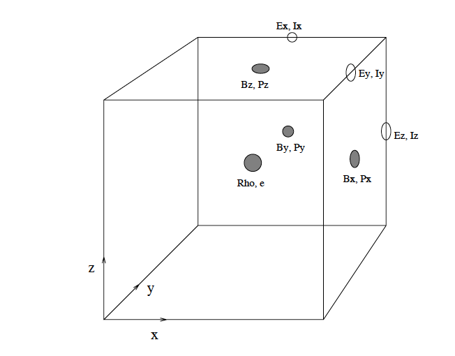

Staggered mesh
Contents
Staggered mesh#
Defining the variables in a staggered mesh allows for preserving the PDEs’ conservation. Therefore, in the standard hydrodynamic (HD) equations
or magneto-HD (MHD) equations. Let us focus only on the 1D continuity equation. In a discretized numerical model, we can write the following.
To have flux conservation in the above, the various variables are defined in different mesh locations. Imagine that each grid point is a box with its faces, edges, and corners. The location of \(\frac{p_{x_{i+1}}^n-p_{x_{i}}^n}{\Delta x}\) is at \(i+1/2\). So if the density is defined at the center of the staggered mesh, the momentum is defined at the faces of the mesh, as represented in the figure below

Note how the density and energy are centered, velocities, magnetic field and momentum at the faces, and current or electric field at the edges. Consequently, the result of a derivative is returned at a point that is shifted half grid point up or down relative to the input values. This is indeed often the point where the result is needed, and this circumstance is the main advantage of the staggered grid method. However, sometimes coefficients, variables, and derivatives are required at other positions within the staggered mesh. For this, one needs to realize interpolations to shift half the grid in the required direction.
Staggered mesh in Bifrost#
As shown in the last subsection of Discretization, the derivative operations return the value half grid shifted. Sometimes, the variables are needed to be shifted half grid. Bifrost uses a 5th-order accurate interpolation method involving the same six neighboring points as the 6th-order spatial derivatives. The 5th-order interpolation operator is obtained through simple permutations of indices:
where \(a=1-3b+5c\), \(b=\frac{1}{24}-3c\), and \(c=\frac{3}{640}\). Note if \(c=0\) or \(c=b=0\) produces a 3rd or 1st-order accurate interpolation.
The choice of the 5th-order interpolation was based on tests that showed an enhanced noise level at a wavenumber close o the Nyquist wavenumber with lower-order operators.